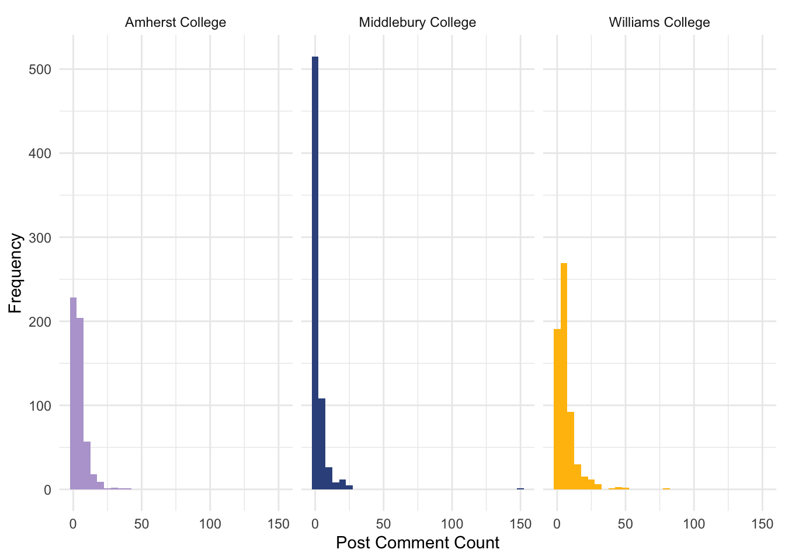
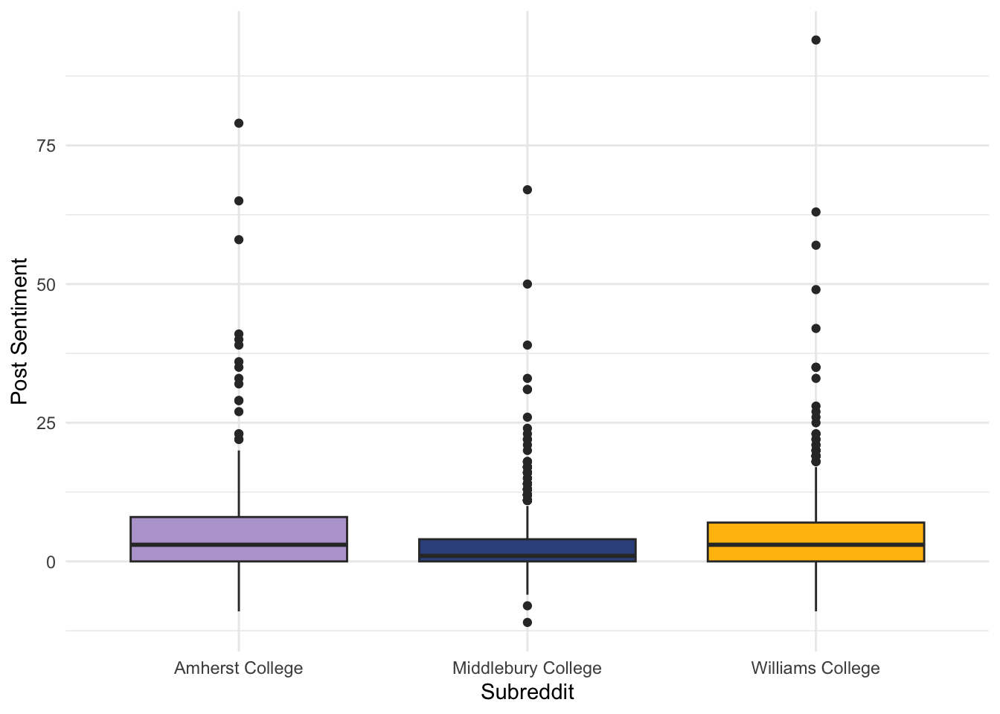

| Subreddit | Post Count | Sentiment (avg) | Sentiment (med) | Comments (avg) | Comments (med) |
|---|---|---|---|---|---|
| Amherst College | 521 | 5.26 | 3 | 4.40 | 3 |
| Middlebury College | 675 | 2.95 | 1 | 2.36 | 0 |
| Williams College | 622 | 4.81 | 3 | 6.28 | 4 |
A Cross Subreddit Sentiment & Engagement Analysis
What’s sentiment and engagement like across subreddits?


Let’s compare the subreddits! Table 1 above depicts sentiment score and comment count per post measured by both the mean and median. These values were found by grouping our scraped, sentiment-annotated dataset by subreddit and calculating averages and medians of comment coun and sentiment score. If you want to explore the data further to see how this table came to be check out the full dataset here. The post count was comparable, which was unsurprising given that we scraped the subreddits from the same time frame. For sentiment, Middlebury clearly seems to stand out as more negative (2.95/post, med = 1) compared to Amherst (5.26, med = 3) and Williams (4.81, med = 3). Amherst and Williams also tend to have higher engagement: (4.40, med = 3) and (6.28, med = 3) respectively relative to Midd (2.36, med = 0). These numbers are fun to compare, but, to assess the statistical significance of these potential differences, you have to go a few steps further.
To make any conclusions about whether significant differences exist between the per post sentiment scores and comment counts (refer to Table 1) on these subreddits, one would typically rely on an ANOVA (analysis of variance) test. This method looks for significant differences between the group means, but unfortunately, it relies on a few pesky assumptions about the data it applies to (Navarro (2019)). Two of the three main assumptions - normality and equal variance - were found to be highly questionable for our data, so we chose to rely on the Kruskal-Wallis test, a handy tool for analysis unbounded by parametric assumptions. For a deep dive into the test itself, refer to Navarro (2020), and if you are curious about how we came to the decision to use it (good for you!), skip down to Section 1.4
Kruskal-Wallis Test of Significant Difference
| Parameter | Statistic | p |
|---|---|---|
| 56.73 | 2 | 0 |
| Parameter | Statistic | p |
|---|---|---|
| 378.43 | 2 | 0 |
The results of the Kruskal-Wallis tests for both subreddit sentiment and egagement were quite conclusive! A significant difference between the post sentiment scores for at least one pair of subreddits was detected (H = 2, p < 0.001) Table 2 (a). The same outcome was found for post comment count (H = 2, p < 0.001) Table 2 (b). With such damming results, we turned to Dunn’s Test to find which subreddits differed by what metric!
Dunn’s Test for Subreddit by Subreddit Differences
| Sub 1 | Sub2 | Statistic | p | p adj | Sig |
|---|---|---|---|---|---|
| Amherst College | Middlebury College | -6.65 | 0.00 | 0 | **** |
| Amherst College | Williams College | -0.75 | 0.46 | 1 | ns |
| Middlebury College | Williams College | 6.18 | 0.00 | 0 | **** |
| Sub 1 | Sub2 | Statistic | p | p adj | Sig |
|---|---|---|---|---|---|
| Amherst College | Middlebury College | -12.89 | 0 | 0 | **** |
| Amherst College | Williams College | 4.99 | 0 | 0 | **** |
| Middlebury College | Williams College | 18.85 | 0 | 0 | **** |
Dunn’s test is the standard follow up procedure when a significant Kruskal-Wallis test is observed (Dinno (2015)). It tests for pairwise differences between groups, which in our case, are the subreddits.
Just like our Kruskal-Wallis results, these tests (Table 3) were quite convincing! For sentiment, both Amherst and Middlebury (p < 0.001) and Middlebury and Williams (p < 0.001) had significantly different post scores. The row colors in Table 3 (a) illustrate the direction of these differences, with the color of the school with the higher sentiment scores filling the row for each pairwise comparison. Since no significant difference was found between the sentiment scores of Amherst and Williams, their row is left white to signify a tie.
We also saw significant differences across all groups when testing comment count Table 3 (b): Amherst-Middlebury (p < 0.001), Amherst-Williams (p < 0.001), and Middlebury-Williams (p < 0.001).
Who was the Winner?
Unfortunately, while it was a close-run thing, Williams College won the general subreddit battle; while no difference was found between our post sentiment scores in Table 3 (a), they edged us convincingly in post comments (Table 3 (b)). On the other hand, Middlebury doesn’t get off the hook for being the worst subreddit BY FAR on these two metrics. Though gold won the day, we can still make them pay.
Our Checking of ANOVA Assumptions (not for the faint of heart)
To reiterate, the assumptions for ANOVA are independence of observations, normality, and equal variance across groups (Navarro (2019)).
Independence of Observations
This assumption would only violated if the sentiment scores and comment counts of posts were somehow influenced by each other. Since this was not the case, we were able to move past this assumption without too much stress.
Normality
In many cases when the data itself is not normally distributed, ANOVA tests can still conducted a degree of caution. Many cite the Central Limit Theorem, which states that the sampling distribution of the mean of any sample (which is the statistic of interest for ANOVA) will be approximately normal with a sample size >= 30 (Mordkoff (2016)). While this did apply in our case as we collected far more than 30 posts from each subreddit, a few diagnostic tests gave us pause. For one, after fitting ANOVA modesl to predict sentiment and engagement from subreddit, we ran the standard diagnostic tests, whose output are below:
For normality, you want the points on the Q-Q plot to generally follow the line. The significant tail observable at the end of both plots in Figure 1 suggests a high degree of non-normality to the data. In spite of this, we could have proceeded conducting ANOVA tests with extreme caution due to the central limit theorem, but another problem existed: the skewed nature of the data itself.

The quick-and-dirty histograms of Figure 2 explore the raw sentiment and engagement distributions within each subreddit. Our main problem here was that most of these histograms exhibit skewness to some degree, especially for comment count Figure 2 (b). If your data itself is skewed, the mean as a measure of central tendency is called into question. We ultimately decided to err on the side of caution and not use the mean (Kruskall-Wallis and Dunn’s Test make no inferential statements about actual group means).
Equal Variances
We began with a few visual explorations testing equal variance. The first is a visual diagnostic test on the error terms of fitted ANOVAs is called a residual vs fitted (predicted) plot.
For residual vs. fitted plots, the condition of equal variance tends to look promising if the points are scattered randomly above and below the 0 line. This is far from the case here in Figure 3, as there is a clear, discrete pattern to the errors. Therefore, equal variance was already suspect. We looked at box plots next:

Our worries deepend as not only were the general spread of both comments (Figure 4 (b)) and sentiment (Figure 4 (a)) different across subreddits, but the prescence of a large number of outliers further supported our decision to not use the mean as our statistic of interest. To put the nail in the coffin, we formally tested equal variance with Levene’s Test “Homogeneity of variance” (n.d.), a metric that only relies on the assumption of independent observations. A significant result on Levene’s Test suggests heterogeniety of variance across groups.
| df1 | df2 | statistic | p |
|---|---|---|---|
| 2 | 1815 | 10.5 | 0 |
| df1 | df2 | statistic | p |
|---|---|---|---|
| 2 | 1815 | 14.68 | 0 |
The results of Levene’s Tests (Table 4) confirmed what we had already suspected. The variance of both sentiment in Table 4 (a) and comment count in Table 4 (b) were found to strongly differ across subreddits (p < 0.001 for both tests). And thus, as a result of our deep concerns for normality and the clear violation of the homogeneity of variance assumption, we decided to scrap the ANOVA project and continue with the Kruskal Wallis.
Amazing work if you read down to the end, especially if you skipped the results section to read about assumptions! We calculated that only 5% of readers will care about ANOVA assumptions, so you’re in rare company. We’ll provide you with this Section 1.1 link if you want to go back up. Thanks for reading!
References
Dinno, A. (2015), “Nonparametric pairwise multiple comparisons in independent groups using dunn’s test,” The Stata Journal: Promoting communications on statistics and Stata, 15, 292–300. https://doi.org/10.1177/1536867X1501500117.
“Homogeneity of variance” (n.d.).
Mordkoff, T. (2016), “The assumption(s) of normality.”